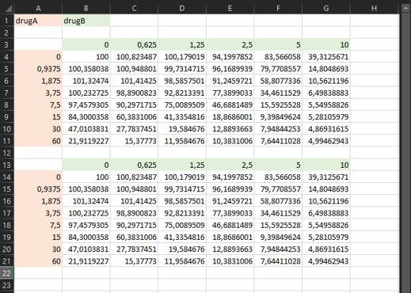
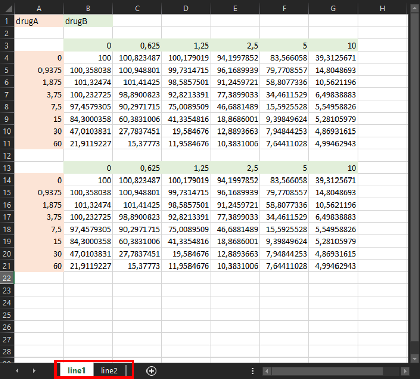
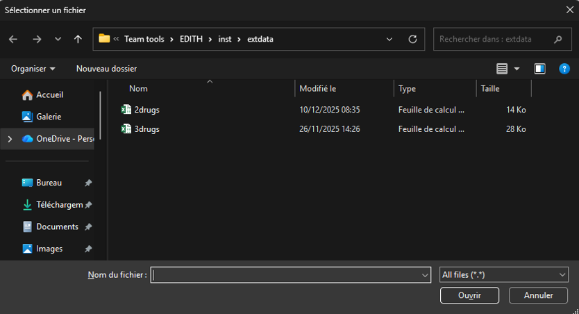
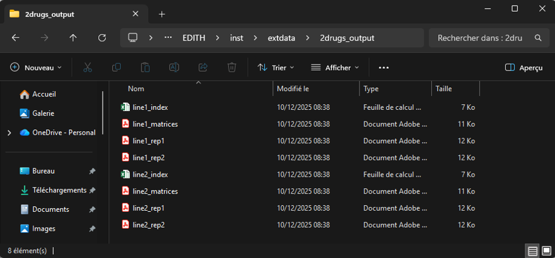
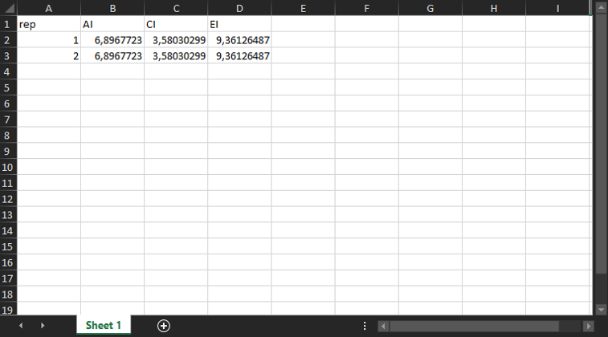

Tutorial with 2 drugs
two_drugs.Rmd📊 Input for EDITH
To use the EDITH package, you need to provide an input
file in .xlsx format. This file should contain the
dose-response data for two drugs. You can find an example of such a file
in the extdata folder of the package, or found the complete
path by running the following code:
list.files(
path = system.file("extdata", package = "EDITH"),
pattern = ".xlsx", full.names = TRUE
)## [1] "/home/runner/work/_temp/Library/EDITH/extdata/2drugs.xlsx"
## [2] "/home/runner/work/_temp/Library/EDITH/extdata/3drugs.xlsx"Otherwise, you can have a look at the snapshot of the example input file below:

🔥 The criteria for the input file are as follows:
- The file must be in
.xlsxformat. - The first cell (
A1) must contain the name of the drug in the rows (e.g., “Drug A”). - The second cell (
B1) must contain the name of the drug in the columns (e.g., “Drug B”). - The second row must be empty.
- The third row must contain the concentrations of Drug B (starting
from cell
B3). - The first column must contain the concentrations of Drug A (starting
from cell
A4). - The drugs concentrations must be in increasing order, starting from zero (0) for no drug and with a consistent step size.
- The rest of the cells must contain the corresponding viability values between 0 and 100 (values higher than 100 will be set to 100).
💡 Note: If you have multiple replicates for the same experiment (ie. with exactly the same drugs and doses), you can add them in the same sheet, just below the first experiment, with one empty row in between.

💡 Note: If you have multiple experiments, you can add them in additional sheets of the same file, with the same format. The name of each sheet will be used as the name of the output files.

🚀 Run EDITH
run_EDITH() is a all-in-one function that performs the
entire analysis pipeline, from data preprocessing to visualization of
results. After loading the EDITH package, you can run the
function by copy-pasting the following code into the RStudio console and
hitting Enter:
Then, you can select the input file you want to analyze via a pop-up window:

After selecting the file, the function will automatically process the data, perform the analysis, and generate the output files in the designated output folder.
💡 Note: You don’t need to create the output folder.
It will be created automatically when running the functions. It will be
create in the same directory as your input file, with the same name as
your input file followed by _output/.
🎉 Output
After running the run_EDITH() function, you will find
the output files in the output directory created automatically. Here is
an example of the output directory structure for a input file with 2
experiments (ie. 2 excel sheets line1 and
line2), with 2 replicates each:

You obtain:
- One
.pdffile per replicate (ie. per experiment and per replicate):
- A heatmap visualizing the viability data across different drug concentration combinations,
- A heatmap visualizing the expected viability based on the Bliss independence model,
- A heatmap visualizing the interaction effect.

- One
.pdffile per experiment (ie. per excel sheet) with the viability and interaction heatmaps of all replicates in an unique file.

- One
.xlsxfile per experiment (ie. per excel sheet) detailing the additive, combination and efficacy indexes for all replicates.

🔎 Fore more details about the method, please refer to the theory vignette: https://mathilde-robin.github.io/EDITH/articles/theory.html